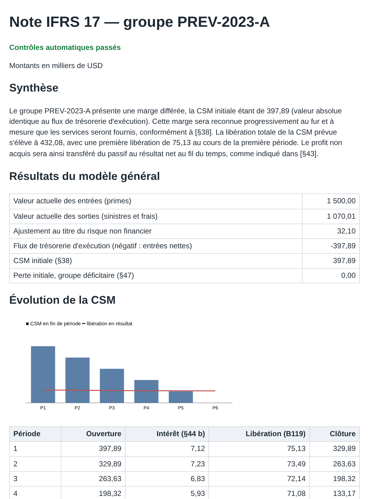

Du bordereau à la note IFRS 17, sans chiffre inventé.
Déposez l'état d'un portefeuille d'assurance. Six agents lisent le document, calculent la marge sur services contractuels, retrouvent les paragraphes de la norme et rédigent une note. Le code vérifie chaque chiffre et chaque citation ; un humain valide dès qu'un contrôle échoue.
Trois façons de confier un dossier
Un PDF de l'assureur
Le tableau est lu par sa couche texte, cellule par cellule. Chaque chiffre extrait doit exister dans le document.
Un scan ou une photo
Un modèle de vision lit l'image deux fois, sous deux éclairages. Si les deux lectures divergent, un humain tranche.
Une question à l'oral
Whisper transcrit la question avec le vocabulaire IFRS 17, puis elle suit le même chemin qu'une question écrite.
Ce que le code vérifie
Le modèle de langage lit, cherche et rédige. Il ne calcule jamais et n'a jamais le dernier mot : à chaque étape, le code contrôle ce qu'il a produit.
| Étape | Contrôle par le code | Mesuré |
|---|---|---|
| Lecture du document | Chaque chiffre extrait est recherché dans le document ; une somme sinistres + frais doit retomber sur deux montants du tableau. | 0 dossier piégé passé sans contrôle, sur 10 |
| Calcul | Moteur Python (§38, §44, §47, B119), testé contre des calculs faits à la main. | 15/15 CSM justes |
| Citations de la norme | Chaque paragraphe cité doit figurer dans les extraits fournis, et la phrase recopiée doit s'y trouver. | 0 citation inventée |
| Relecture | Un second modèle juge chaque phrase ; la preuve qu'il recopie doit venir du paragraphe cité. | 5 erreurs sur 7 repérées |
| Synthèse de la note | Chaque nombre écrit doit venir des résultats du moteur, chaque paragraphe des passages vérifiés. | 9/9 synthèses acceptées |
La note remise à la direction financière
Synthèse, résultats du modèle général, évolution de la marge période par période, paragraphes de la norme cités avec leur texte, et la liste des contrôles passés. Les montants viennent du moteur, jamais du modèle de langage.
Produire une note
Analyser un dossier
Déposez l'état d'un portefeuille. Les agents s'enchaînent sous vos yeux ; la note s'affiche à la fin, ou une demande de validation si un contrôle échoue.
Chaîne de contrôle
- Les étapes apparaîtront ici dès le lancement.
Interroger la norme
Posez une question sur IFRS 17, par écrit ou à l'oral. La réponse ne s'appuie que sur le règlement (UE) 2021/2036 ; chaque paragraphe cité est vérifié, puis relu par un second modèle.
Questions pour commencer
Simuler un groupe dans le temps
Le moteur Python suit un groupe de contrats année après année : BEL au taux courant, ajustement pour risque, CSM, écarts d'expérience, compte de résultat et OCI. L'exemple chargé est celui d'un cours IFRS 17 ; le moteur le retrouve à l'euro près.
Résultats mesurés
Chaque choix du projet a été mesuré sur des jeux de test : 56 questions sur la norme, 25 documents dont 10 piégés, 8 enregistrements vocaux. Les échecs sont gardés, ils ont motivé les versions suivantes.
Fonctionnement
Un orchestrateur fait travailler six agents spécialisés. n8n déclenche les dossiers, envoie les notes et demande la validation humaine.
| Agent | Rôle | Modèle | Garde-fou |
|---|---|---|---|
| Routeur | Classe la demande : question sur la norme, document, calcul, hors sujet. | gpt-oss-20b | Hors sujet : refus immédiat, sans recherche |
| Extracteur | Lit un PDF, un scan ou une photo et remplit les données du groupe. | gpt-oss-120b, Gemini Flash | Ancrage des chiffres, double lecture des images |
| Calculateur | Valeurs actuelles, ajustement pour risque, CSM, perte, libération par période. | Aucun : Python | Testé contre des calculs manuels |
| Chercheur RAG | Retrouve les paragraphes et répond en les citant. | BGE-M3, gpt-oss-120b | Citations vérifiées, refus si rien ne répond |
| Vérificateur | Juge chaque phrase : soutenue par son paragraphe, portée respectée. | gpt-oss-120b | Une correction au plus, puis un humain |
| Rédacteur | Écrit la note : le code les chiffres, le modèle la synthèse. | gpt-oss-120b | Nombres et paragraphes de la synthèse vérifiés |